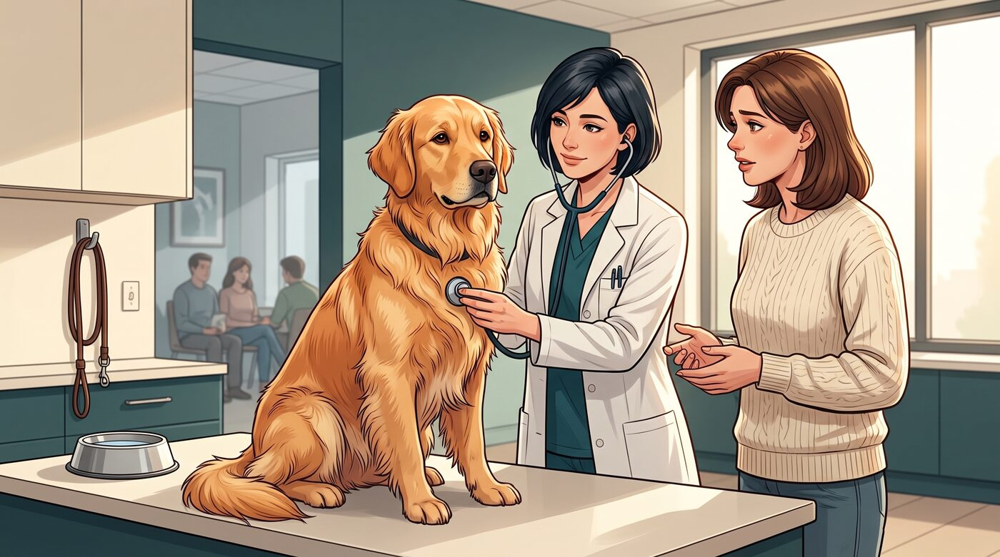
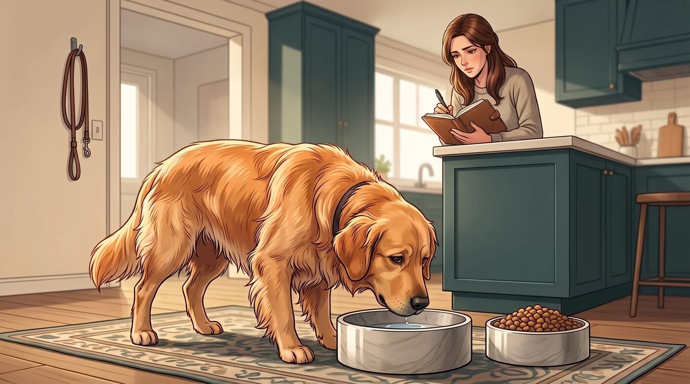
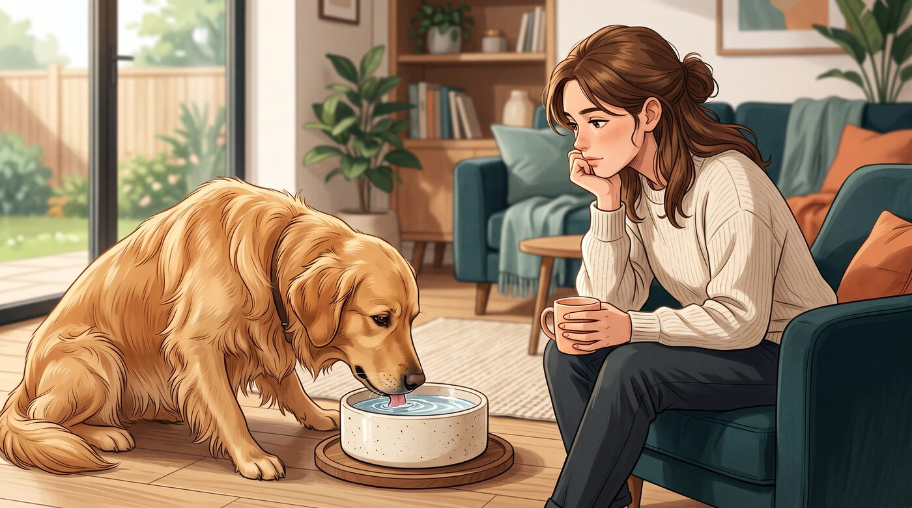
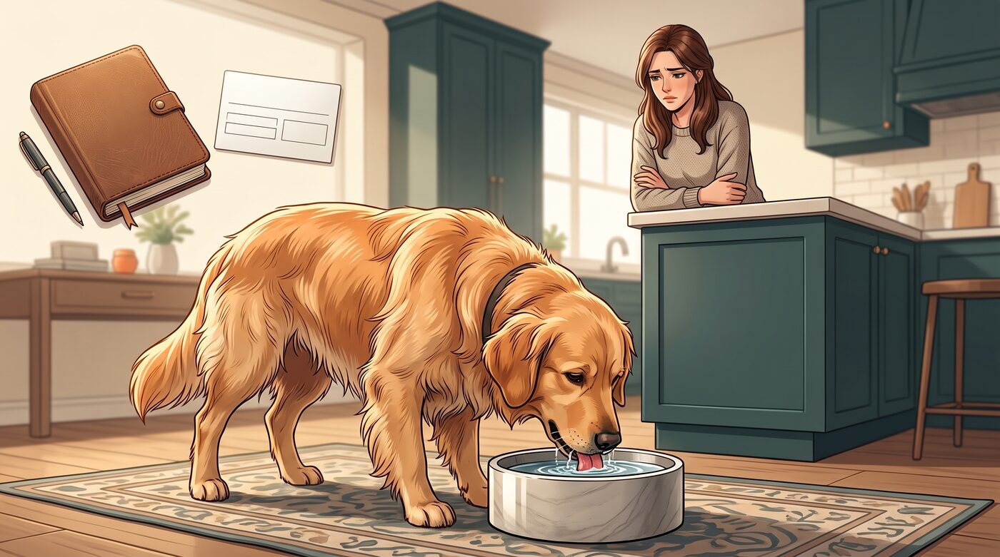
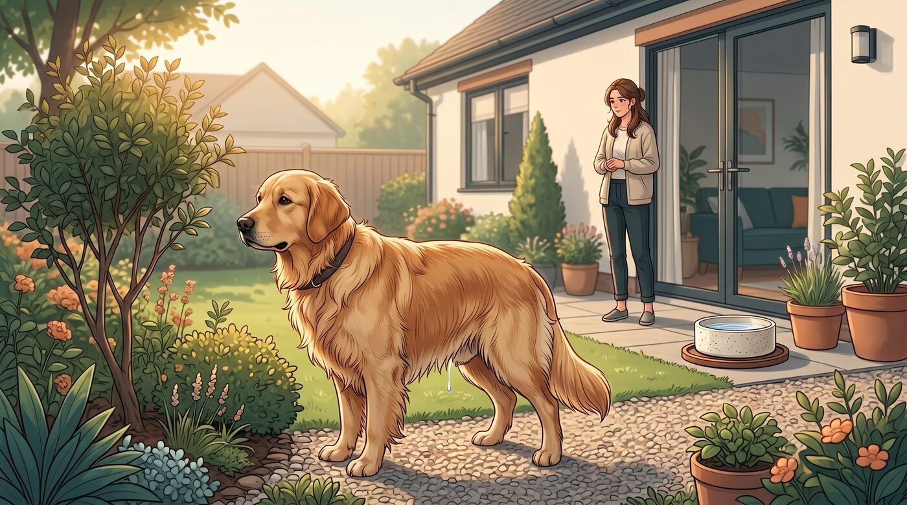
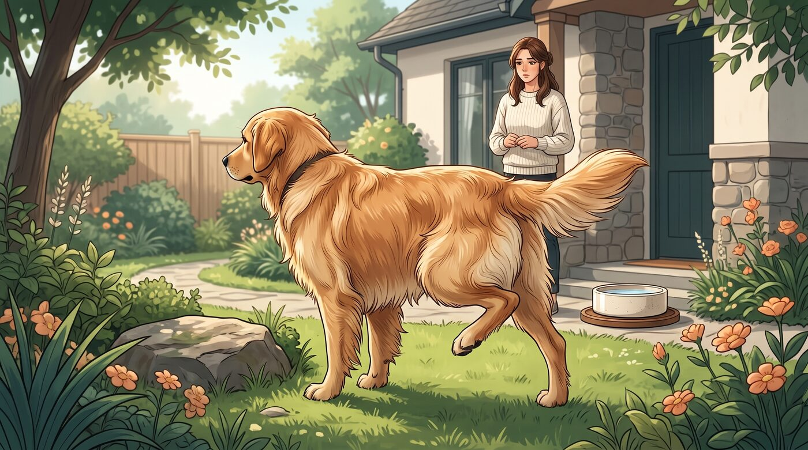

Eu acho que uma das coisas mais fáceis de passar despercebida na rotina de um cachorro é a quantidade de água que ele bebe. Afinal, água é algo bom. Se o cachorro está bebendo, pensamos que está se hidratando.
Mas existe uma diferença entre aquele dia quente em que ele volta do passeio com sede e uma mudança que começa a se repetir: o pote precisa ser abastecido várias vezes, ele pede para sair mais vezes para fazer xixi e parece estar procurando água pela casa.
Nesse caso, a sede pode estar contando uma história que merece ser observada.
O aumento persistente da ingestão de água pode ter causas simples, como calor e exercício, mas também pode acompanhar problemas de saúde que precisam de investigação veterinária.
1. Beber bastante água nem sempre significa que existe um problema
Vamos começar pelo mais simples.
Um cachorro pode beber mais água em um dia quente, depois de uma atividade física intensa ou dependendo da alimentação.
Cães que comem alimentos mais secos, por exemplo, podem apresentar um padrão de ingestão diferente daqueles que recebem alimentos com maior quantidade de água.
Por isso, eu não ficaria preocupado apenas porque o cachorro esvaziou o pote depois de um passeio.
O que realmente chama minha atenção é a mudança de padrão.
Se ele sempre bebeu uma determinada quantidade e, de repente, começa a beber muito mais todos os dias, vale observar melhor.
2. Existe uma quantidade normal de água para um cachorro beber?

Existe uma referência, mas eu teria cuidado para não transformar um número em regra absoluta.
A ingestão de água varia de acordo com peso corporal, clima, atividade física, alimentação e características individuais.
O AKC cita aproximadamente 40 a 60 ml de água por quilo de peso corporal por dia como uma faixa habitual, enquanto o consumo acima de 100 ml/kg/dia é geralmente considerado polidipsia, ou sede excessiva. Mesmo assim, uma mudança significativa em relação ao padrão individual do cachorro pode ser relevante antes de chegar a esse valor.
Por exemplo, se um cachorro sempre bebeu normalmente e, sem nenhuma mudança aparente na rotina, passa a procurar água constantemente, eu não ignoraria apenas porque ele ainda não atingiu um determinado número.
O próprio histórico daquele animal importa.
3. Observe também quanto ele está fazendo xixi

Aqui existe uma pista que eu considero muito importante.
Quando um cachorro começa a beber mais água, frequentemente também começa a urinar mais.
Você pode perceber que ele pede para sair com maior frequência, permanece mais tempo urinando ou começa a ter acidentes dentro de casa mesmo estando previamente treinado.
É como se uma coisa levasse à outra:
bebe mais → produz mais urina → perde mais água → sente mais sede.
Em algumas doenças, esse ciclo pode começar justamente com uma alteração na quantidade de urina produzida.
Por isso, se você percebeu aumento simultâneo de sede e urina, eu anotaria essa informação para contar ao veterinário.
4. O que pode fazer um cachorro beber água demais?

Aqui precisamos ter cuidado para não transformar uma lista de possibilidades em um diagnóstico.
Existem diversas causas para o aumento persistente da sede.
Entre elas estão condições como diabetes mellitus, doença renal crônica e síndrome de Cushing. Também existem outras possibilidades, incluindo doenças hepáticas, alterações de cálcio no sangue, algumas infecções e determinados medicamentos.
E existe uma situação curiosa: em alguns casos, fatores comportamentais também podem participar do problema.
Ou seja, beber muita água não aponta automaticamente para uma única doença.
É justamente por isso que tentar descobrir a causa em casa pode ser frustrante.
O veterinário normalmente precisa juntar o histórico, os sinais apresentados e exames complementares para entender o que está acontecendo.
5. Quando a sede vem acompanhada de outros sinais

É aqui que eu ficaria mais atento.
Imagine que seu cachorro começou a beber muito mais água.
Além disso, perdeu peso. Ou está mais cansado. Ou começou a comer de maneira diferente. Ou passou a urinar dentro de casa. Ou apresentou vômitos e diarreia.
Nesse cenário, a sede deixa de ser uma informação isolada.
Outros sinais podem ajudar o veterinário a identificar a causa por trás do aumento do consumo de água. Entre os sinais que podem acompanhar a polidipsia estão alterações de energia, peso, apetite, vômitos e diarreia.
Por isso, eu não observaria apenas o pote.
Observaria o cachorro inteiro.
6. Não tire a água do cachorro para "testar" o que está acontecendo

Esse ponto merece um bloco próprio porque parece intuitivo fazer isso — e pode ser perigoso.
Se o cachorro está bebendo muito, alguém pode pensar: "Vou diminuir a água para ver se ele para de beber."
Eu não faria isso.
A ingestão excessiva pode estar acontecendo porque o organismo está tentando compensar uma perda de água. Restringir a água sem orientação veterinária pode provocar desidratação e alterações perigosas no equilíbrio de eletrólitos.
Também não tente realizar em casa testes que envolvam privação de água.
A própria avaliação veterinária de alguns distúrbios relacionados à sede pode envolver procedimentos específicos, e testes de privação de água não devem ser realizados por conta própria.
A regra aqui é simples: água fresca deve continuar disponível.
7. Quando devo procurar o veterinário?

Se o aumento da sede for persistente e não tiver uma explicação óbvia, eu entraria em contato com o veterinário.
Especialmente se você também estiver percebendo:
- Aumento importante da urina
- Acidentes dentro de casa
- Perda de peso
- Alteração do apetite
- Cansaço ou apatia
- Vômitos
- Diarreia
- Mudanças no comportamento
- Outros sinais que não faziam parte da rotina
Se o cachorro apresentar sinais neurológicos, fraqueza intensa, dificuldade para caminhar, vômitos ou alterações importantes depois de ingerir uma quantidade excessiva de água rapidamente — por exemplo, durante brincadeiras na piscina ou com mangueira — a situação é diferente e pode exigir atendimento imediato, pois existe risco de intoxicação por água.
E tem uma coisa que ajuda muito: anote o que você está observando.
Quando começou? Ele está bebendo quanto aproximadamente? Está urinando mais? Mudou o apetite? Perdeu peso? Está mais cansado?
Essas informações podem ajudar o veterinário a direcionar a investigação.
Às vezes, o pote de água é a primeira pista
Eu gosto dessa ideia porque ela muda a maneira como observamos nossos animais.
O cachorro não consegue chegar para dizer: "Alguma coisa mudou comigo."
Mas ele pode mostrar isso através de pequenas alterações na rotina.
Um pote que antes durava o dia inteiro começa a esvaziar rapidamente. Um cachorro que nunca pedia para sair começa a pedir várias vezes. Aquele animal que sempre foi previsível passa a apresentar acidentes dentro de casa.
Nenhum desses sinais, sozinho, permite descobrir o que está acontecendo. Mas juntos eles contam uma história.
E quanto mais cedo percebemos que aquela história mudou, mais cedo podemos procurar a orientação adequada.
Então, se seu cachorro está bebendo mais água do que costumava, não entre em pânico — mas também não ignore a mudança. Observe. Anote. E, se o padrão persistir, converse com um veterinário.
Este conteúdo é educativo e não substitui uma avaliação veterinária. Se seu cachorro apresentar aumento persistente da sede ou da urina, especialmente acompanhado de outros sintomas, procure orientação de um médico-veterinário.